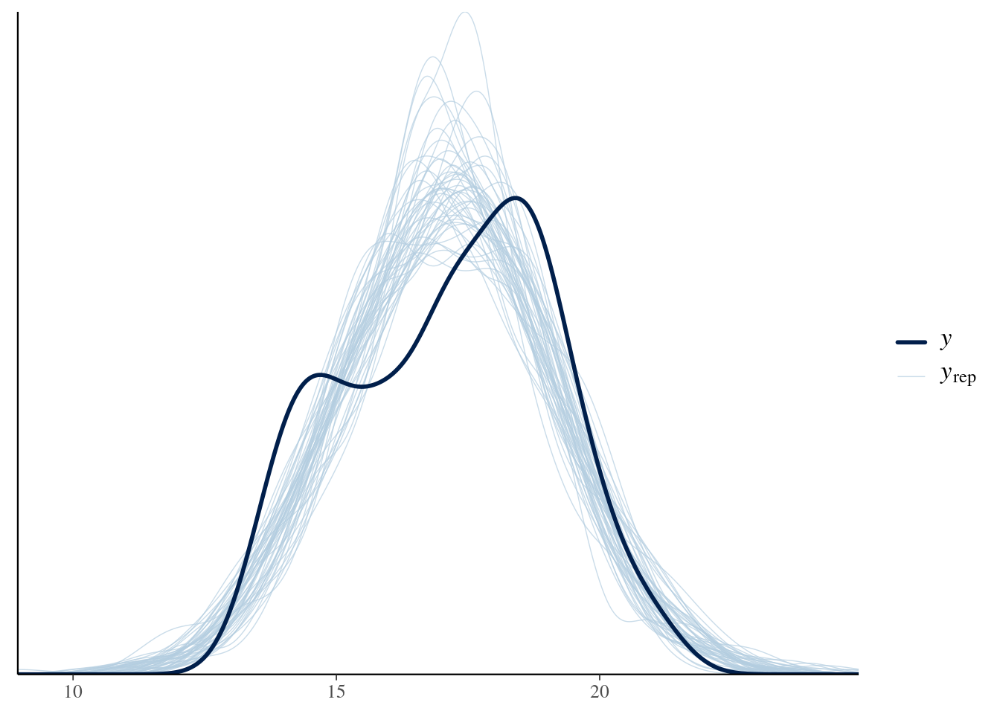
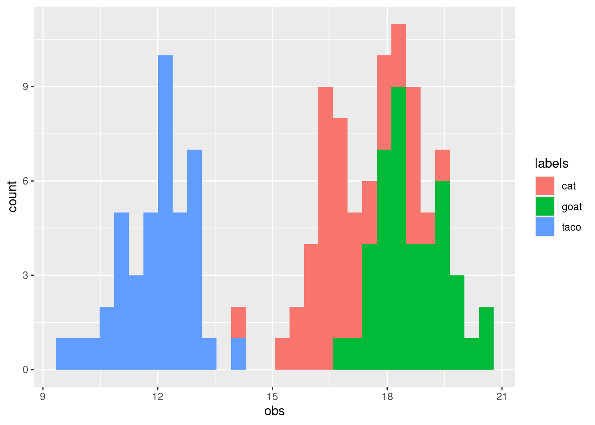
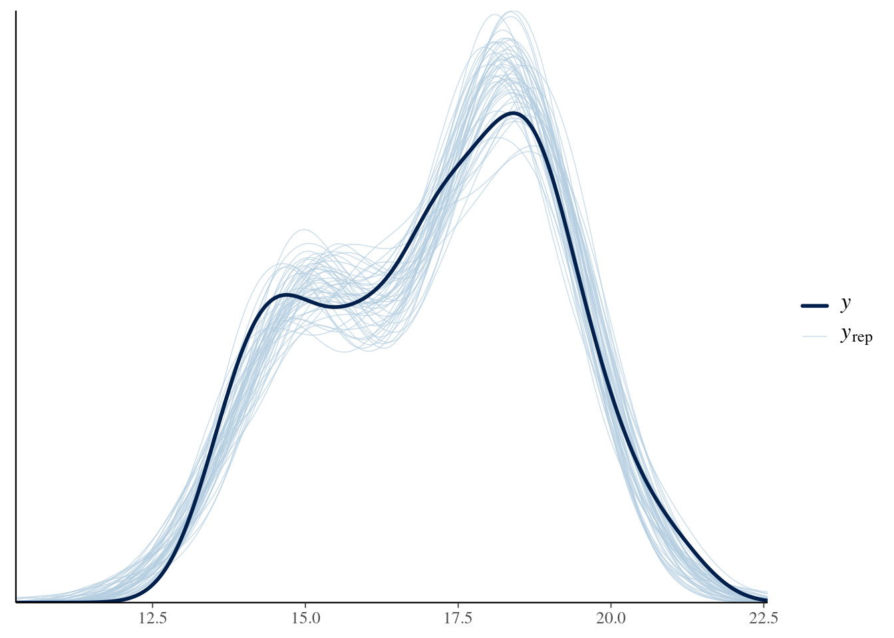

library(palmerpenguins)
library(tidyverse)
# library(cmdstanr)
suppressPackageStartupMessages(library(rstan))
rstan_options("auto_write" = TRUE)
options(mc.cores = parallel::detectCores())
library(tidybayes)Palmer penguins and discrete predictors
fitting a model with discrete predictors.
In this section we’re going to look at models with one discrete predictor. You may have encountered this kind of model with discrete predictors.
Load packages and data
Data exploration
Let’s start by taking a look at the Palmer Penguin dataset by looking at the distribution of observations of bill size.
library(tidyverse)
library(palmerpenguins)
penguins |>
ggplot(aes(x=bill_depth_mm)) +
geom_histogram(binwidth = .5)Warning: Removed 2 rows containing non-finite outside the scale range
(`stat_bin()`).There’s quite a lot of variation in these measurements, with a suggestion of perhaps more than one peak in this distribution.
A simple model
\[ \begin{align} \text{Bill depth} &\sim \text{Normal}(\mu, \sigma)\\ \mu &\sim \text{Normal}(17.5, 2) \\ \sigma &\sim \text{Exponential}(1) \\ \end{align} \]
let’s express the same model in Stan:
normal_dist <- stan_model(
"topics/discrete_predictor/normal_dist.stan")
normal_distS4 class stanmodel 'anon_model' coded as follows:
data {
int N;
vector[N] measurements;
}
parameters {
real mu;
real<lower=0> sigma;
}
model {
// priors
mu ~ normal(17,2);
sigma ~ exponential(1);
// likelihood
measurements ~ normal(mu, sigma);
} The model section looks very much like the mathematics shown above. I want you to notice especially how the bottom chunk has three lines, each describing a probability distribution. Models are devices for putting together the probability of all the quantities we are looking for. Again, a Bayesian separates the world into unmeasured or measured quantities – and above we state which are observed (the data block) and which are unobserved (the parameters block).
Before we fit this model we need to get the data ready. We’ll drop NA values1, and set up the data in a list.
# first we drop all NA values
penguins_nobillNA <- penguins |>
#drop NA values
filter(!is.na(bill_depth_mm))
## then we assemble the data as a list.
## I'm using the base function with()
## it lets me use the variable name directly
## without writing penguins_nobillNA$bill_depth_mm
list_bill_dep <- with(penguins_nobillNA,
list(N = length(bill_depth_mm),
measurements = bill_depth_mm))
## sample 4 chains, suppress counting iterations
normal_bill_dep_samp <- sampling(normal_dist,
data = list_bill_dep,
refresh = 0)
## summarize the samples for each parameter into a nice table
normal_bill_dep_samp |>
posterior::summarise_draws() |>
knitr::kable()| variable | mean | median | sd | mad | q5 | q95 | rhat | ess_bulk | ess_tail |
|---|---|---|---|---|---|---|---|---|---|
| mu | 17.148944 | 17.149876 | 0.1053078 | 0.1043844 | 16.974258 | 17.321932 | 1.000619 | 3296.251 | 2109.761 |
| sigma | 1.976812 | 1.975143 | 0.0755066 | 0.0752288 | 1.856026 | 2.106336 | 1.001637 | 3185.266 | 2204.132 |
| lp__ | -405.498917 | -405.193215 | 0.9854578 | 0.7222621 | -407.463281 | -404.562381 | 1.001645 | 1701.458 | 2529.016 |
Plotting parameters.
We don’t have one value for each of our unknown numbers: we have thousands. We need to get a sense of what these possible values mean scientifically. An excellent way to do this is by making as many pictures as possible. We will start with making plots of specific parameters.
We can look at the distributions easily using the bayesplot package.
bayesplot::mcmc_hist(normal_bill_dep_samp, pars = "mu") +
coord_cartesian(xlim = c(10, 25))`stat_bin()` using `bins = 30`. Pick better value with `binwidth`.bayesplot::mcmc_hist(normal_bill_dep_samp, pars = "sigma") +
coord_cartesian(xlim = c(0, 7))`stat_bin()` using `bins = 30`. Pick better value with `binwidth`.Notice that the distributions do not have the same shape as the prior– this is particularly true for \(\sigma\).
tibble(param = c("mu"),
values= rnorm(200, 17.5, 2)) |>
ggplot(aes(x = values)) +
geom_histogram() +
coord_cartesian(xlim = c(10,25))`stat_bin()` using `bins = 30`. Pick better value with `binwidth`.tibble(param = c("sigma"),
values= rexp(200,1)) |>
ggplot(aes(x = values)) +
geom_histogram() +
coord_cartesian(xlim = c(0,7))`stat_bin()` using `bins = 30`. Pick better value with `binwidth`.
This shows an important point: the prior distribution does not determine what the posterior looks like.
Posterior predictions: the easy way to check your model
In my experience, ecologists (rightly!) care a great deal about model diagnostics. And with good reason: you need to know how much to trust a model before using it to make a scientific claim. Bayes offers a straightforward way to show how well a model is doing: plot model predictions, and compare them to the observed data. This involves using the model as a data generating machine, which we’ll look at next.
Posterior prediction in R
# just get some draws
draws <- rstan::extract(normal_bill_dep_samp, pars = c("mu", "sigma"))
draws_matrix <- posterior::as_draws_matrix(draws)
## set up a matrix. for every posterior sample,
## (that is, for a value of mu and a value of sigma)
## draw a whole fake dataset from a normal distribution with that mean and sd.
nsamples <- 50
yrep <- matrix(0, ncol = list_bill_dep$N, nrow = nsamples)
# pick some random rows
set.seed(1234)
chosen_samples <- sample(1:nrow(draws_matrix), replace = FALSE, size = nsamples)
subset_draws <- draws_matrix[chosen_samples,]
for (r in 1:nsamples){
yrep[r,] <- rnorm(n = list_bill_dep$N,
mean = subset_draws[r, "mu"],
sd = subset_draws[r, "sigma"])
}
bayesplot::ppc_dens_overlay(y = list_bill_dep$measurements,
yrep = yrep)
Posterior predictions in Stan
EXERCISE
In the code above I show how to simulate the posterior predictive distribution using the posterior draws for \(\mu\) and \(\sigma\). However, if you want, you can do the same process in Stan.
- Extend the Stan code above to simulate new observations using the
generated quantitiesblock. (Tip: look back at the Simulation exercise).
- plot them using bayesplot, as above.
SOLUTION
normal_dist_rng <- stan_model(file = "topics/discrete_predictor/normal_dist_rng.stan")
normal_dist_rngS4 class stanmodel 'anon_model' coded as follows:
data {
int N;
vector[N] measurements;
}
parameters {
real mu;
real<lower=0> sigma;
}
model {
measurements ~ normal(mu, sigma);
mu ~ normal(17,2);
sigma ~ exponential(1);
}
generated quantities{
vector[N] yrep;
for (i in 1:N){
yrep[i] = normal_rng(mu, sigma);
}
} Here we have a handy random number generator inside Stan.
samp_bill_dep_rng <- sampling(normal_dist_rng,
data = list_bill_dep,
refresh = 0)
samp_bill_dep_rng_draws <- rstan::extract(samp_bill_dep_rng, pars = "yrep")
samp_bill_dep_rng_draws_matrix <- posterior::as_draws_matrix(samp_bill_dep_rng_draws$yrep)
bayesplot::ppc_dens_overlay(y = list_bill_dep$measurements,
yrep = head(samp_bill_dep_rng_draws_matrix, 50))
The code is much shorter, because there is less to do in R.
Both of these gives the same outcome: the posterior predictive distribution. This gives us a straightfoward way to test our model’s performance:
- we use the model to generate fake observations.
- plot these on top of the real data
- if the data is a really poor match, we know our model has a distorted view of the world.
Different groups are different
let’s add in differences among species
penguins |>
ggplot(aes(x = bill_depth_mm, fill = species))+
geom_histogram(binwidth = .5) +
scale_fill_brewer(palette = "Dark2")Warning: Removed 2 rows containing non-finite outside the scale range
(`stat_bin()`).Now we can see that the distribution is in fact three different shapes, all placed together.
Warning
Sometimes scientists will plot histograms of data at the beginning of a research project, and use the histogram to decide if their data are “normally distributed” or not. This is not helpful! Instead, decide on a model first, and ask yourself what kind of data you expect.
Stan code for species differences
\[ \begin{align} \text{Bill depth}_{i} &\sim \text{Normal}(\mu_{\text{species}[i]}, \sigma) \\ \mu_{\text{species}} &\sim \text{Normal}(17, 2) \\ \sigma &\sim \text{Exponential}(2) \\ \end{align} \]
normal_dist_rng_spp_forloop <- stan_model(file = "topics/discrete_predictor/normal_dist_rng_spp_forloop.stan")
normal_dist_rng_spp_forloopS4 class stanmodel 'anon_model' coded as follows:
data {
int N;
vector[N] measurements;
array[N] int<lower=1,upper=3> spp_id;
}
parameters {
vector[3] mu;
real<lower=0> sigma;
}
model {
for (i in 1:N){
measurements[i] ~ normal(mu[spp_id[i]], sigma);
}
mu ~ normal(17,2);
sigma ~ exponential(1);
}
generated quantities{
vector[N] yrep;
for (i in 1:N){
yrep[i] = normal_rng(mu[spp_id[i]], sigma);
}
} There’s a few differences to notice here:
- in the
datablock: We have a new input! A declaration of the array of integers at the top, saying if this is “species 1”, “species 2”, or “species 3” muis a vector now. why?- notice the for-loop.
Quick detour : vector indexing
A very useful technique, in both R and Stan, is transforming a vector with indexing. Vector indexing requires two vectors: the first contains values we want to select or replicate, the second contains integers giving the positions of the elements we want. For example:
some_values <- c("taco", "cat", "goat", "cheeze", "pizza")
positions <- c(1,1,2,2,3,1,1,5)
some_values[positions][1] "taco" "taco" "cat" "cat" "goat" "taco" "taco" "pizza"This works for number values as well, and is very useful when you want to do simulations! let’s simulate three groups with different averages.
set.seed(525600)
some_means <- c(12, 17, 19)
some_labels <- c("taco", "cat", "goat")
df_of_means <- data.frame(index = rep(1:3, each = 42)) |>
mutate(the_mean = some_means[index],
labels = some_labels[index],
obs = rnorm(n = length(the_mean),
mean = the_mean,
sd = 1))
df_of_means |>
ggplot(aes(x = obs, fill = labels)) +
geom_histogram()`stat_bin()` using `bins = 30`. Pick better value with `binwidth`.
Vector indexing in Stan
We can use this very same technique in Stan:
normal_dist_rng_spp <- stan_model(file = "topics/discrete_predictor/normal_dist_rng_spp.stan")
normal_dist_rng_sppS4 class stanmodel 'anon_model' coded as follows:
data {
int N;
vector[N] measurements;
array[N] int<lower=1,upper=3> spp_id;
}
parameters {
vector[3] mu;
real<lower=0> sigma;
}
model {
measurements ~ normal(mu[spp_id], sigma);
mu ~ normal(17,2);
sigma ~ exponential(1);
}
generated quantities{
vector[N] yrep;
for (i in 1:N){
yrep[i] = normal_rng(mu[spp_id[i]], sigma);
}
} The only difference to the previous model is in the line with the for-loop, which is now replaced with a vectorized expression. This is faster to write and will run faster in Stan. However it’s not possible in every case.
Sampling the species model
EXERCISE
Fit one (or both) of the species-specific models above. 1. What changes do you need to make to the input data? Remember we’ve added a new input: a vector of numbers 1, 2, or 3 that tells us if we are working with the first, second, or third species. There are many ways to do this (e.g. try using as.numeric after as.factor)
2. Visualize the posterior with bayesplot. Does it look better than the model without species? How can you tell?
SOLUTION
list_bill_dep_spp <- with(penguins_nobillNA,
list(
N = length(bill_depth_mm),
measurements = bill_depth_mm,
spp_id = as.numeric(as.factor(species))
)
)
normal_dist_rng_spp_samp <- sampling(normal_dist_rng_spp,
data = list_bill_dep_spp,
refresh = 0)Let’s take a look at this in Shinystan
shinystan::launch_shinystan(samp_normal_dist_rng_spp)and we can repeat the posterior checking from before:
# Extract and convert draws
spp_yrep_draws <- extract(normal_dist_rng_spp_samp, pars = c("yrep"))
# Posterior predictive check
bayesplot::ppc_dens_overlay(y = list_bill_dep$measurements,
yrep = head(spp_yrep_draws$yrep, 50))
The predicted distribution is now much more like the real data!
Visualizing species – using tidybayes
We can also make figures for each individual species. Here we will move away from using bayesplot and try to visualize our posterior using the handy functions in the tidybayes package.
library(tidybayes)
normal_dist_post_samp <- tidybayes::gather_draws(normal_dist_rng_spp_samp,
yrep[row_id],
ndraws = 50)
normal_dist_post_samp |>
mutate(species = penguins_nobillNA$species[row_id]) |>
ggplot(aes(x = .value, colour = species)) +
geom_density(aes(group = .iteration), alpha = .1) +
facet_wrap(~species) +
geom_density(aes(x = bill_depth_mm),
data = penguins_nobillNA,
colour = "black") +
scale_colour_brewer(palette = "Dark2")Exercises
Level 1
- repeat this experience for another variable in the dataset. Does the same code work on bill length? What about body size? What would you change about the model (if anything)
- use bayesplot to examine the fit of body size to these data.
Level 2
- generate some random groups of your own, with known means. How well does the model fit these data
- The present model is fixed for exactly 3 groups. how would you change it for any number of groups?
Level 3
- the function
tidybayes::compose_datais a convenient way to set up your data for passing it into R. Try out this function. What does it produce for our dataset? How do you need to modify our Stan program so that it works for the output oftidybayes::compose_data? - As you can see, the model assumes the same sigma for all species. what if you relax this?
Optional!
Try this on your own data!
Footnotes
just for this toy example!↩︎